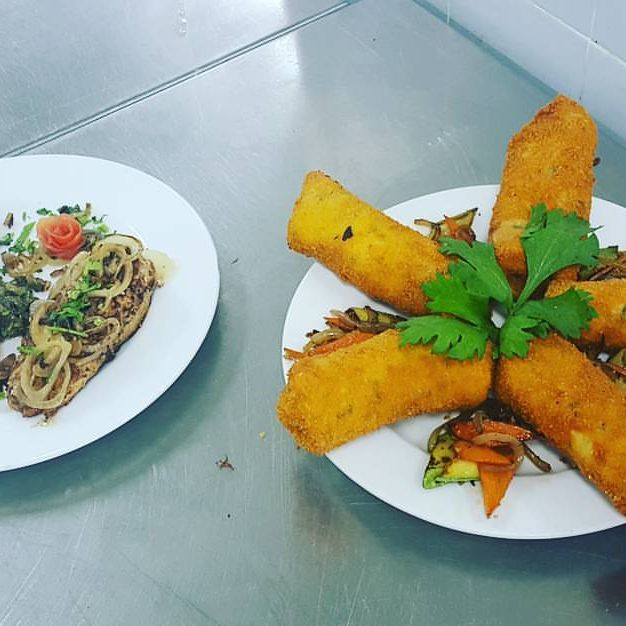
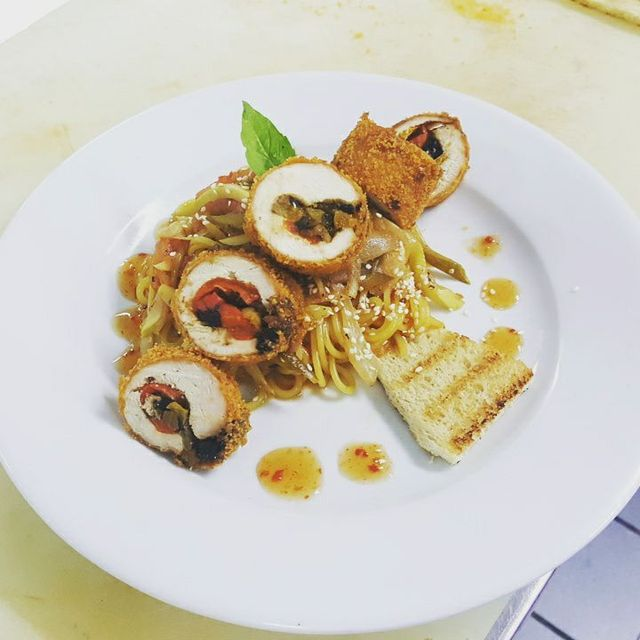
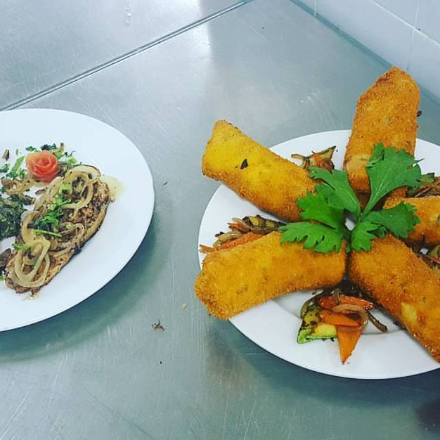
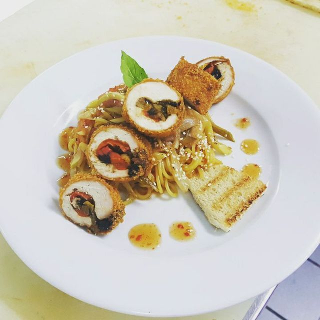
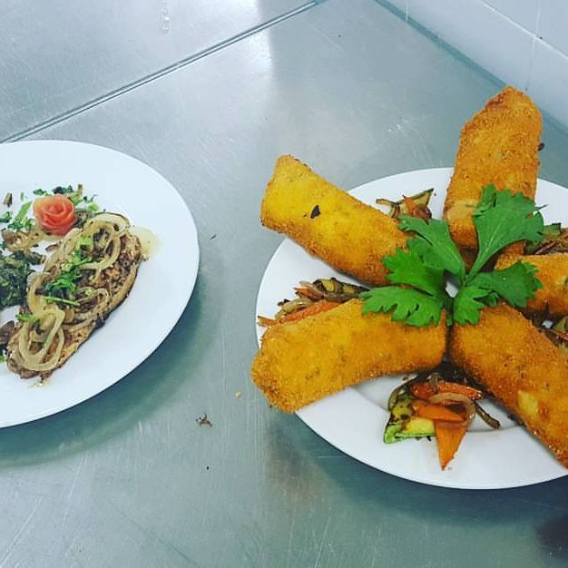
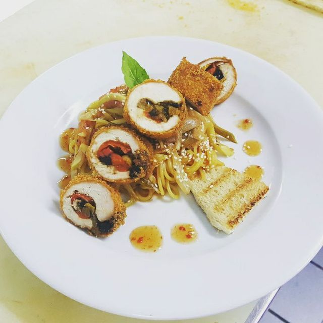

And here are some photos from course:
 





Full military service,six months later, I was promoted to shift supervisor until the end of the service.
During the service I was honored and commended by my commanders,and they're the ones who recommended that I continue the service and sign tenure.
I ran a team of cooks, mastmen, counters(soldiers in regular service).
The role required maximum availability, including at night and on weekends.
During the service, I received rewards and bonuses on an ongoing basis by meeting the targets,in addition to three certificates of excellence.
The job made him much more responsible and performed a role that required meeting the pressures and tight schedules.
The most outstanding abilities I had were: responsibility, seriousness, high corporate ability, lots of investment and perseverance.
The last course I did in the military was to study type 2 "Cooks"- the art of cooking at Rimonim College Tiberias.


So that's some things about myself and I'll start by really like cooking,
love creating new recipes, focusing on the cooking of Eastern cuisine , plus connecting very much to Asian and Far West cuisine.
Cooking is an integral part of me with which I make those around me happy and most importantly my family.
Food is one of the most important components in humans, and where we don't look, we always see, hear, and most importantly smell this component of life.
So this is the part about my "home" hobby, another part I'd like to share with as is "motorsport".
I really like sports cars and love the adrenaline that flows through the body after every press of the pedal, with which also comes the stunning sound of the engine.
Until about two years ago, I owned a Skoda Octavia VRS that I improved and came to a good performance in its category
( the vehicle was about 330 hp and had a lot of plugins for the engine that would have leapt from 0-Km/h to 100-Km/h in just 5.7 seconds and from 100-Km/h to 200-Km/h in just 11.2 seconds).
I invested a lot of time and lots of money and it gave me endless propulsion. Whoever took responsibility for the action is the one who said, "I'm going to do it." Energy Garage".
He was and will remain forever my mentor in this story called "Motorsport" and I got a lot of tips and guidance from him which undoubtedly helped me a lot! So I will offer you first of all for a simple and amazing place with attitude that there is no other places and a warm home for your sports cars in the north!
So who's your mentor? Meet Grisha Shpilberg, who will accompany you from 0%-to-100% percent of, AUDI/VW/SEAT/SKODA vehicles.
Every year until before the coronavirus I would fly to it and spend the whole month of August there.
I haven't flown in two years and it feels very missing, what's left is just the pictures and the memories. So I'd still like to share some photos of the experiences I've had in Canada.